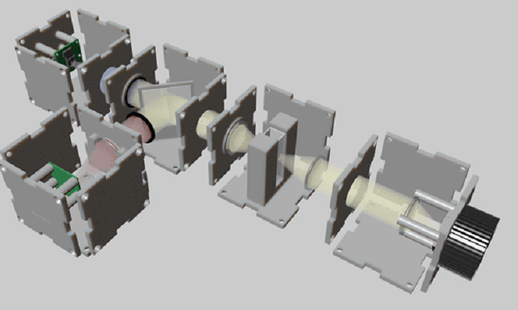

μCube: A Framework for 3D Printable Optomechanics

µCube, not to be confused with miCube, is an a framework for the design and assembly of 3D printed housing for optical devices. This includes templates for a Camera, and a light source, along with a myriad of other parts. You can check out Mihails Delman's and Jim Haseloff's paper on the μCube in the journal of open hardware. The paper does note some caveats to 3D printing such delicate devices:
"the fixed nature of current parts, together with the insufficient precision of current desktop 3D printers, can result in misalignments of the optical parts during assembly"... "In order to enable construction of high quality optical devices the manufacturing method could be changed to machining, molding or other type of precision manufacturing. In addition, adjustable parts could be designed to allow alignment after the assembly is complete. This can be achieved by designing parts for holding micromanipulators, or as has been shown by Salazar-Serrano et al, with 3D printed kinematic mounts."